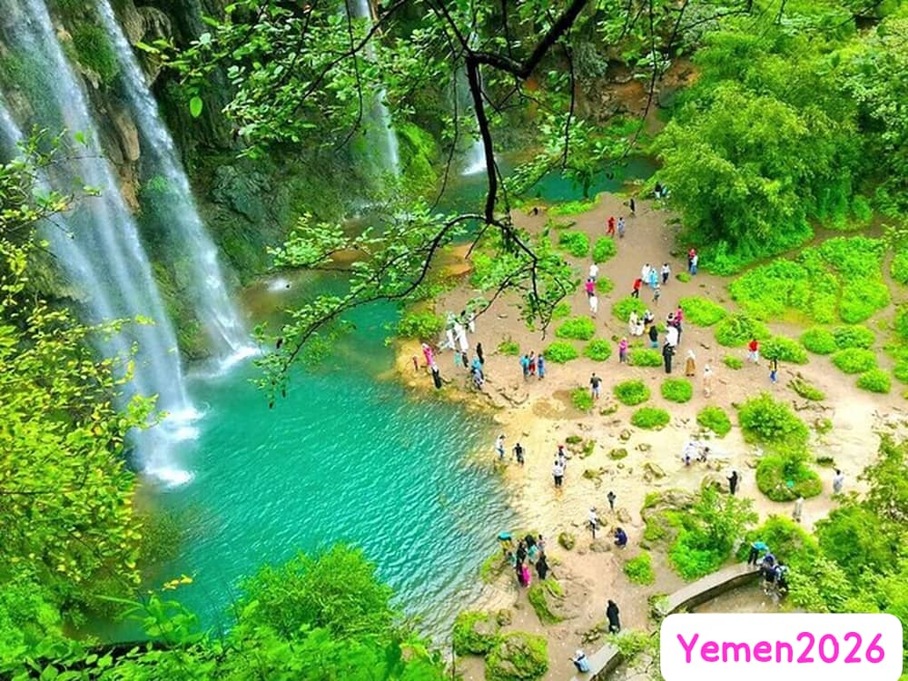

I am an Independent Engineer and Researcher dedicated to documenting and preserving Yemeni heritage and culture. Through the Heaven Al-Jabri project, I focus on showcasing the historical beauty of Yemen including Old Sanaa, Shibam Hadramout, and Socotra Island to the world. Bachelor of Science in Computer Engineering from King Fahd University of Petroleum & Minerals - KFUPM - KSA
Yemeni Heritage Documentation Initiative

Email: Available on request
Website: jabri-com.vercel.app